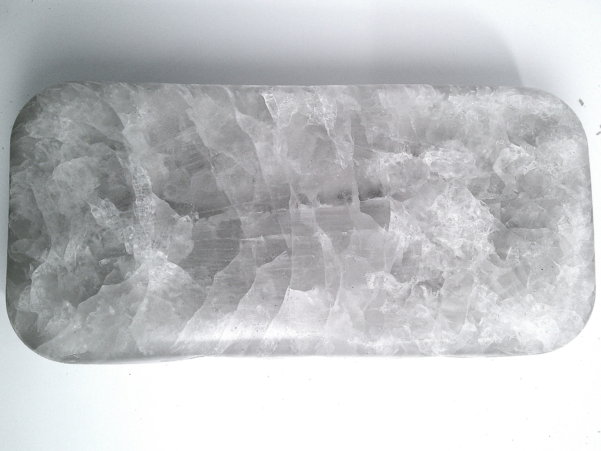

Process development
High-purity halide salts for developing and optimizing high-temperature chemical and electrochemical processes.
- Reaction media
- Electrochemical processing
- Fluoride chemistry
- High-temperature refining
SaltGen has developed purification, characterization, and analytical capabilities for high-purity halide salts used in demanding high-temperature environments.
The performance of a halide salt is strongly influenced by trace impurities and chemical condition.
SaltGen has developed purification approaches designed to reduce critical impurities, including oxides, and produce more consistently characterized salt compositions.
This supports teams exploring how salt chemistry influences corrosion, materials degradation, electrochemical behavior, heat transfer, chemical reactions, and system performance.

FLiBe—a fluoride salt mixture of lithium fluoride and beryllium fluoride—is one of the materials within SaltGen’s technology focus. Its combination of high-temperature stability, heat-transfer characteristics, and high tritium breeding ratio makes it relevant to advanced energy technologies. SaltGen has developed capabilities to produce and characterize high-purity FLiBe for:
FLiNaK is a ternary fluoride salt mixture of lithium fluoride, sodium fluoride, and potassium fluoride. Its thermal stability, heat-transfer characteristics, and electrochemical properties make it relevant to energy and industrial applications. SaltGen is developing capabilities to produce and characterize high-purity FLiNaK for:
Materials, analytical tools, and defined salt environments to support research, development, and qualification.
High-purity halide salts for developing and optimizing high-temperature chemical and electrochemical processes.
Defined molten-salt environments for developing and validating sensors, probes, reference electrodes, and analytical technologies.
Evaluation of alloys, ceramics, coatings, and other materials in high-temperature halide salt environments.
Analytical capabilities to measure impurities and characterize halide salt chemistry.
SaltGen brings together salt production, purification, and analytical chemistry to help technical teams develop better data for high-temperature systems.
Reduce critical impurities.
Understand salt composition.
Evaluate real conditions.
Inform system development.